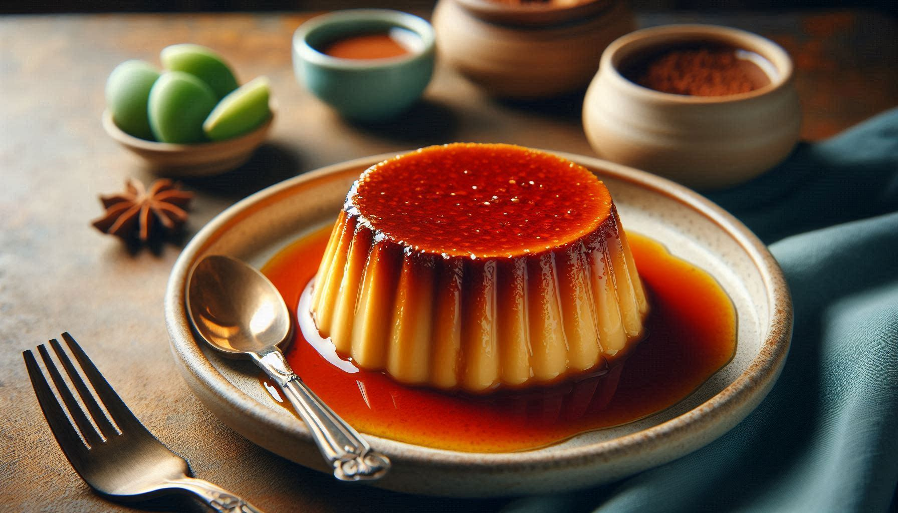

Spanish Flan

Description:
Spanish flan is a baked custard, smooth dessert smothered with caramel sauce!
- Prep Time: 15min
- Cook Time: 1hr
- Additional Time: 3hr
- Total Time: 4hr 15min
- Servings: 8
Ingredients:
- 1 cup white sugar
- 3 large eggs
- 1 (14 ounce) can sweetened condensed milk
- 1 (12 fluid ounce) can evaporated milk
- 1 tablespoon vanilla extract
Directions:
-
Step 1:
- Preheat the oven to 350 degrees F (175 degrees C).
-
Step 2:
- Melt sugar in a medium saucepan over medium-low heat until liquefied and golden in color.
- Carefully pour hot syrup into a deep 9-inch round glass baking dish, turning the dish to evenly coat the bottom.
- Set aside.
-
Step 3:
- Beat eggs in a large bowl. Add condensed milk, evaporated milk, and vanilla; beat until smooth.
- Pour egg mixture on top of caramel in the baking dish; place in a deep roasting pan.
- Carefully pour in enough hot water to come 1 inch up the sides of the dish.
-
Step 4:
- Bake in the preheated oven until just set with a slight jiggle in the center, about 1 hour.
- Keep in mind the flan will continue to set as it cools.
- Remove from the oven and carefully transfer baking dish to a wire rack.
- Cool to room temperature, then cover with plastic wrap to prevent a skin forming.
- Refrigerate for 3 hours or up to 3 days.
-
Step 5:
- To serve, run a knife around the edges of the dish.
- Carefully invert onto a rimmed serving plate and let caramel sauce flow over flan.